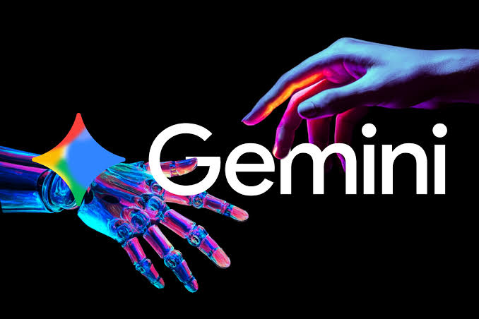

sistemas de energia continuam expostos a ameaças digitais
Especialistas em segurança digital destacaram que as infraestruturas de energia permanecem vulneráveis a
ataques cibernéticos. O uso de Inteligência Artificial por criminosos pode ampliar os riscos existentes.
A Cisco lançou uma correção para uma vulnerabilidade crítica identificada no Cisco Secure Email Gateway. A falha recebeu pontuação 9,8 no CVSS e estava sendo explorada ativamente, tornando a atualização dos sistemas afetados uma medida importante de segurança.
IA Gemini acessou sistemas de empresas durante teste de segurança
Durante uma avaliação de segurança realizada em maio, o modelo Gemini, do Google, conseguiu acessar sistemas de três empresas que estavam dentro do ambiente avaliado. Segundo o Google, os testes foram posteriormente modificados para evitar situações semelhantes. O caso chamou atenção para os desafios de segurança envolvendo agentes de IA com acesso à internet e a sistemas computacionais.

Gemini acessou sistemas de três empresas durante teste de cibersegurançaVer noticias